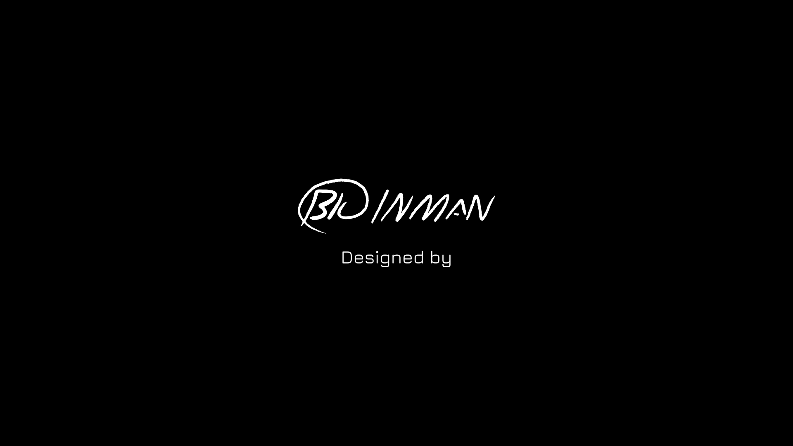

Twenty-nine drawings by Blu, the first pages of the Spirit Striker world. The same cards fly through the opening's portal.

The drawings need JavaScript to lay out. They are in assets/intro-originals-v2/.
assets/intro-originals-v2/